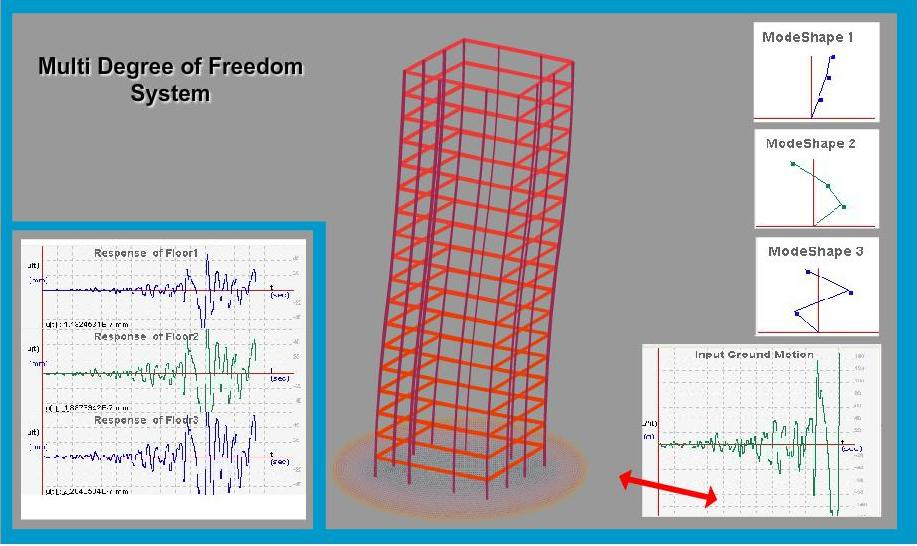

All the real structures are actually infinite degree of freedom systems. However, for the purpose of studying their dynamic behaviour we can idealize them into single or multi degree of freedom systems. If mass of the structure can be lumped at different locations in the structure then the dynamic behaviour consists of same number of modes of vibration. Such structure is called a multi degree of freedom system. Typically in a multi-storey building, masses of different elements can be lumped at centre of mass at each slab level.


Equation of motion of multi degree of freedom system in matrix form --
[m]{x''} + [x]{x'} + [k]{x} = -xg(t)[m]{I}
where,
[m] = Mass Matrix.
[k] = Stiffness Matrix.
[c] = Damping Matrix
{I} = Unit Vector
x''g(t) = Ground Motion
The physical coordinates {x} may be related with normal or prinicipal coordinates {q} as,
{x} = [φ]{q}
where,[φ] = Modal Matrix.
Time Derivate of {x} are
{x'} = [φ]{q'}
{x''} = [φ]{q''}

To find out natural frequencies and natural mode shapes of multidegree of freedom system. To find out response of each floor to a given ground motion.


Observation 1: Finding natural frequencies and mode shapes
1. Take n storey structure.
2. Input mass and stiffness of each storey
3. Run the experiment. User can see eigen values (natural frequencies) and eigen vectors (mode shapes).
4. Use may note the eigen vectors and check for modal orthogonality.
Observation 2: Find the response of the structure to given ground motion.
5. Take n storey structure.
6. Input mass and stiffness of each storey.
7. Select ground motion and also damping.
8. Run the experiment. User can find the response of the each floor level on the screen. User can also find the response of each mode.
Go to Manual view on Vibration of M.D.O.F system(Click here)

Q1.
In multi-storey structure mass should be lumped at centre of columns.
True
False
Q2.
Number of mode shapes is equal to number of degrees of freedom.
True
False
Q3.
For even number of floors modes shapes will not be orthogonal.
True
False
Q4.
Lowest eigen value is considered as most useful valu.
True
False
Q5.
All the modes contribute equally to the complete response of the building.
True
False

Procedure for the experiment is as follows.

- http://ocw.mit.edu/NR/rdonlyres/Aeronautics-and-Astronautics/16-20Structural-%20MechanicsFall2002/7E90098F-C973-4B10-9C91-94730623C3B9/0/unit22.pdf
- http://ece.olin.edu/dynamics/assign/ps5_f08.pdf
- http://www.aerostudents.com/files/vibrations/multipleDegreeOfFreedomSystems.pdf
- "Earthquake Resistant Design of Structures" by Pankaj Agarwal, Manish Shrikande